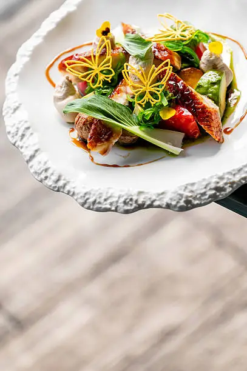
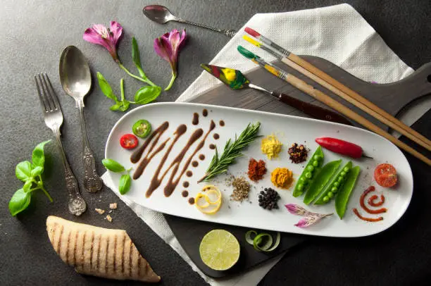
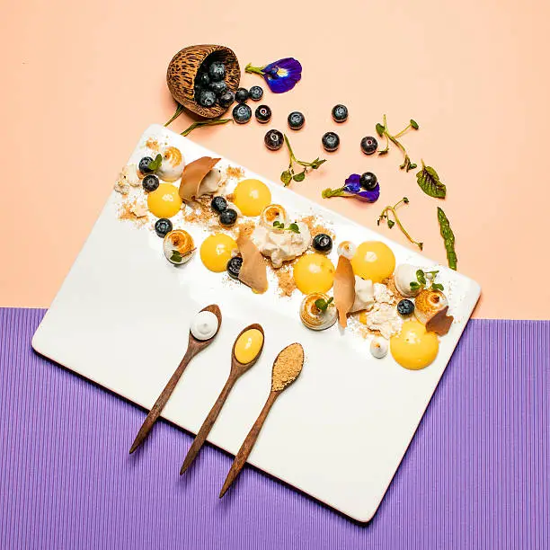
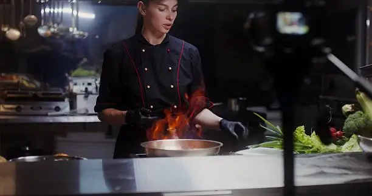

Mastering the Art of Plating: Beyond Just Food
In the world of culinary arts, the phrase "we eat with our eyes first" holds an undeniable truth. While the aroma and taste of a dish are paramount, it's the **visual presentation** that first captures our attention, sparks our curiosity, and sets the stage for the entire dining experience. At TastePlate, we believe that mastering the art of plating is not just an optional skill but a fundamental aspect of truly celebrating your food. It transforms a simple meal into a memorable occasion, a culinary creation into a work of art. This comprehensive guide will take you through the foundational principles, advanced techniques, and philosophical underpinnings of impeccable food styling, ensuring every dish you create is a feast for all senses.
The journey into sophisticated plating begins with understanding the core elements that contribute to visual harmony and appeal. Think of your plate as a canvas and your ingredients as the palette. Every decision, from the choice of plate to the final garnish, contributes to the overall composition. It's about balance, contrast, and guiding the diner's eye through a visual narrative. This isn't about hiding flaws; it's about highlighting the inherent beauty of your ingredients and the care taken in their preparation. Consider the interplay of colors – vibrant greens against rich reds, muted browns contrasted with bright whites. Think about textures – the crispness of a fried element next to the smoothness of a purée, the delicate crumb of a cake beside a glossy sauce. These contrasts create visual interest and promise a multi-sensory experience.
Furthermore, the concept of **negative space** is crucial. Just as in traditional art, the empty areas on your plate are as important as the filled ones. They provide breathing room, prevent overcrowding, and allow each element to stand out. Overly crowded plates can appear messy and overwhelming, diminishing the impact of individual components. A well-utilized negative space directs attention to the focal point of the dish, creating a sense of intention and elegance. It’s about restraint and thoughtfulness, rather than simply putting as much as possible on the plate. The size and shape of your plate also play a significant role here; a larger plate naturally encourages more negative space, giving you more freedom in your composition.
Fundamental Principles of Plating
- Balance: Achieve visual equilibrium by distributing elements thoughtfully. Consider weight, color, and texture. Avoid lopsided presentations.
- Focal Point: Every plate needs a star. This is usually the main protein or a key ingredient, strategically placed to draw the eye.
- Color Harmony & Contrast: Utilize a diverse palette. Bright, contrasting colors pop, while harmonious tones create a soothing effect.
- Texture Variety: Incorporate different textures (crisp, smooth, creamy, crunchy) to add visual and gustatory interest.
- Height & Dimension: Build upwards! Stacking elements or creating layers adds dynamism and sophistication.
- Flow & Movement: Arrange components to suggest movement or a narrative, guiding the diner's gaze across the plate.
- Simplicity & Cleanliness: Less is often more. Avoid clutter. Ensure edges of the plate are spotless.
- Plate Choice: The vessel itself is part of the art. Choose plates that complement the dish in size, shape, and color.
Advanced Plating Techniques for the Aspiring Chef
Once you've mastered the basics, you can delve into more sophisticated techniques that elevate your plating from good to gourmet. These methods often require practice and a keen eye for detail, but the results are undeniably rewarding. Consider the **"rule of odds,"** where odd numbers of elements (e.g., 3 scallops instead of 2 or 4) are often more aesthetically pleasing. This creates a more dynamic and less static composition. Another powerful technique is **layering**, which adds depth and complexity. Instead of placing ingredients side-by-side, think about building them up, allowing each layer to be partially visible and contributing to the overall visual story. This is particularly effective with salads, desserts, or even vegetable sides.
Furthermore, the precise application of **sauces and purees** can define a dish's elegance. A perfectly swirled purée, a delicate line of sauce, or artful dots can transform a simple presentation into a masterpiece. Tools like squeeze bottles, offset spatulas, and even spoons become your brushes. Understanding the consistency of your sauces is key; they should be neither too thin nor too thick to achieve the desired effect. The **geometric precision** of cuts, from perfectly diced vegetables to elegantly sliced meats, also contributes significantly to visual appeal. Uniformity shows skill and attention to detail. This meticulousness extends to every component, ensuring that even the smallest garnish is purposeful.

The strategic use of **garnishes** is another area where artistry truly shines. A garnish should always add to the dish, both visually and sometimes flavor-wise. It's not just about sprinkling parsley. Think about microgreens adding height and a pop of color, edible flowers for elegance, or carefully placed herbs for freshness. A well-chosen garnish can provide a final touch of contrast, texture, or color that completes the plate's narrative. However, remember the principle of simplicity; an overabundance of garnishes can detract from the main elements. Each garnish should have a reason for being there.
"The true art of cooking is not just about tantalizing the taste buds, but about captivating the eyes and nourishing the soul. Presentation is the unspoken prelude to flavor." – Chef Antoine Dubois
The Psychology of Plating
Beyond aesthetics, plating taps into the psychology of dining. A beautifully plated dish subconsciously signals quality, care, and attention to detail. It can elevate perceived value and even influence how the food tastes. Studies have shown that people often describe food as tasting better when it's presented attractively. This isn't magic; it's the power of expectation and sensory perception. When a dish looks appealing, our brains anticipate a pleasurable experience, which can enhance the actual taste. It also encourages slower eating, allowing for more appreciation of the flavors and textures. This intentionality in presentation fosters a deeper connection between the diner and the food, making the meal a more mindful and enjoyable experience.
Consider the emotional response elicited by different plating styles. A rustic, abundant presentation might evoke feelings of warmth, comfort, and generosity, while a minimalist, precise plate might suggest sophistication, refinement, and artistic flair. As a culinary artist, you have the power to convey these emotions through your plating choices. This is where understanding your audience and the context of the meal becomes crucial. Are you aiming for a casual family dinner or a formal celebratory feast? The answers will guide your plating decisions.
Tools of the Trade: Essential Plating Instruments
While creativity is your primary tool, certain instruments can greatly assist in achieving precise and polished presentations. Invest in a few key items to elevate your plating game:
- Offset Spatulas: Ideal for spreading sauces evenly, lifting delicate items, and creating smooth surfaces.
- Plating Tongs: Essential for precise placement of small garnishes, herbs, or delicate components.
- Squeeze Bottles: Perfect for controlled application of sauces, purées, and drizzles.
- Pastry Bags with Various Tips: For piping intricate designs, dots, or small mounds of purées or creams.
- Ring Molds: For creating perfectly round stacks of rice, tartare, or vegetable layers.
- Sharp Paring Knife: For meticulous cutting and shaping of garnishes.
- Microplane: For fine zesting of citrus or grating of hard cheeses, adding a delicate finish.
Case Study: Transforming a Simple Salad
Let's consider a humble garden salad. Traditionally, it might be a mix of greens, a few chopped vegetables, and dressing tossed together. While tasty, its visual appeal might be limited. Now, let's apply plating principles:
- Step 1: Choose the Right Bowl/Plate. A wide, shallow bowl or a flat white plate provides a clean canvas.
- Step 2: Layer the Greens. Instead of dumping, gently layer the mixed greens to create some volume and height.
- Step 3: Strategic Placement of Vegetables. Arrange colorful vegetables (e.g., vibrant cherry tomatoes, thinly sliced cucumber, finely diced bell peppers) around or within the greens, ensuring color contrast and distribution.
- Step 4: Add a Protein/Focal Point. Grilled chicken strips, a perfectly poached egg, or a scoop of quinoa can serve as a focal point, placed slightly off-center.
- Step 5: Dress with Precision. Drizzle the vinaigrette artfully, perhaps in a zigzag pattern or a circular motion, rather than pouring it indiscriminately.
- Step 6: Garnish Thoughtfully. A sprinkle of toasted nuts for crunch, a few microgreens for height, or fresh herb sprigs for color and aroma.
The same ingredients, but transformed into an entirely different visual experience, inviting a more mindful and enjoyable consumption.
Trends in Modern Plating
The world of food styling is constantly evolving, with new trends emerging that challenge and inspire. Currently, there's a strong emphasis on **sustainability in plating**, utilizing seasonal ingredients and minimizing food waste, even in the presentation. The **"less is more" minimalist approach** remains popular, focusing on a few high-quality ingredients impeccably presented. We're also seeing a rise in **deconstructed dishes**, where components are served separately but arranged artfully on the plate, allowing the diner to combine flavors and textures as they wish. **Edible landscapes** are another fascinating trend, where chefs create miniature scenes on the plate using various food elements, transforming dining into a truly immersive experience. Experimentation with **unconventional serving vessels** also adds a unique touch, from slate boards to rustic wooden planks, provided they are food-safe and complement the dish.

The beauty of these trends lies in their adaptability. You don't need to be a Michelin-starred chef to incorporate elements of modern plating into your home cooking. It's about observing, understanding the principles, and applying them in ways that resonate with your personal style and the dishes you create. The key is continuous learning and embracing experimentation. Don't be afraid to try new techniques, even if they don't work out perfectly the first time. Every attempt is a learning opportunity. Share your experiments with our community; the TastePlate gallery is the perfect place to get feedback and inspiration from fellow food enthusiasts.
Practice Makes Perfect: Tips for Home Cooks
For home cooks looking to elevate their plating skills, consistent practice is key. Start by focusing on one or two elements at a time. Perhaps dedicate a week to mastering sauce swirls, then move on to garnish placement. Take photos of your dishes – this is an excellent way to critically assess your work and identify areas for improvement. Compare your plated dishes to inspiration photos from cookbooks or online galleries. Join online communities (like TastePlate's user showcase!) to share your creations and learn from others. Don't be discouraged by initial imperfections; every professional chef started somewhere. The joy is in the journey of continuous improvement.
Remember that plating is an extension of your cooking. It reflects the care, creativity, and passion you pour into preparing a meal. It's not about making food look unnatural or overly manipulated; it's about enhancing its inherent appeal. A simple, fresh ingredient can look extraordinary with thoughtful placement and a touch of color contrast. Even everyday meals can be elevated with a few minutes of conscious plating. Imagine serving a breakfast scramble that’s not just thrown onto a plate but carefully arranged with a sprinkle of chives and a side of artistically fanned avocado slices. Such small gestures can transform the mundane into the magnificent.
Moreover, involve your family or dining companions in the plating process. It can be a fun and engaging activity, especially for children, teaching them about aesthetics and appreciation for food. This collaborative approach can make dining a more interactive and memorable event. It also reinforces the idea that food is meant to be enjoyed not just for sustenance but also for its beauty and the artistry involved in its creation. Share your passion, and inspire others to see food through a more artistic lens.
Conclusion: Your Plate, Your Canvas
The world of food styling is vast and infinitely creative. From the minimalist elegance of Japanese cuisine to the vibrant exuberance of a Mexican fiesta, every culinary tradition has its own approach to presentation. TastePlate is here to guide you on your journey, providing the inspiration, techniques, and community support you need to turn every dish into a celebration. Embrace the philosophy that every plate is a canvas, and every meal an opportunity to express your culinary artistry. So, pick up your tongs, arrange that garnish, and let your passion for flavor and presentation shine through. Happy plating!
We are constantly seeking new ideas and innovations in food styling. Share your thoughts, your favorite plating hacks, or your culinary masterpieces in the comments below or by tagging us on social media. Your creativity fuels our community, and together, we can continue to redefine what it means to truly savor a meal. The conversation around beautiful food is just beginning, and we invite you to be an active part of it. Let's make every meal an experience worth remembering, not just for its taste, but for its stunning visual narrative.
The intricate dance between flavor and aesthetics is a timeless one, rooted deeply in human culture. From ancient banquets adorned with elaborate displays to the precision of modern gastronomy, the way food is presented has always been a key indicator of its value and the respect given to the diner. Understanding this history can also inform your contemporary plating choices, allowing you to draw inspiration from diverse traditions while infusing your own modern touch. It’s a continuous learning process, much like cooking itself, where new ingredients, techniques, and perspectives constantly emerge. Stay curious, stay creative, and most importantly, enjoy every moment of crafting your edible art.
This commitment to excellence in presentation is what sets TastePlate apart. We believe that by focusing on both the culinary execution and the visual artistry, we empower our community to not only cook better but to experience food more fully. It’s about elevating the everyday, making the ordinary extraordinary, and finding joy in every detail of the culinary journey. Whether you are aiming for a simple, elegant weeknight meal or a show-stopping feast for a special occasion, the principles and techniques shared here will provide you with the foundation to achieve your plating goals. Dive in, explore, and let your imagination be your guide. The possibilities are truly endless when you treat your plate as a canvas and your food as your masterpiece.
The interaction between the textures of the food and the texture of the plate itself is another subtle yet powerful element. A smooth, glossy sauce against a matte ceramic plate, or a rustic, earthy dish presented on a polished wooden board—these tactile contrasts enhance the overall sensory experience. It's about building layers of perception, from visual to tactile, that culminate in a truly immersive dining event. This level of detail signifies a profound respect for the ingredients and the diner, transforming a simple act of consumption into an appreciative engagement with edible art. This detailed mindfulness is a hallmark of truly exceptional food styling, moving beyond mere decoration to become an integral part of the culinary narrative.
Furthermore, consider the story you want to tell with your plate. Is it a story of seasonality, featuring ingredients at their peak? Is it a narrative of heritage, bringing traditional flavors to life with modern presentation? Or is it an expression of innovation, pushing the boundaries of what food can be? Every component, every placement, every color choice contributes to this narrative. The more thought you put into this underlying story, the more cohesive and impactful your plating will become. It transforms the act of plating from a mere technical exercise into a profound act of communication, sharing your culinary vision with your audience.
The journey of mastering food styling is perpetual. There’s always a new technique to learn, a new ingredient to explore, or a new trend to adapt. The beauty of this art form lies in its fluidity and its responsiveness to cultural shifts and individual creativity. As you continue to experiment and refine your skills, you will develop a unique plating style that is distinctly yours. This personal signature is the ultimate expression of culinary artistry, where your individual voice shines through in every beautifully presented dish. Embrace this ongoing evolution, and let your passion for food styling inspire every plate you create.
We invite you to share your unique plating journeys and discoveries. Use the comment section below to post your insights, ask questions, or simply share your latest culinary triumph. Our community thrives on shared knowledge and mutual inspiration. By engaging with each other, we collectively elevate the standards of home cooking and food styling. Let’s foster a vibrant space where creativity flourishes, and every meal becomes an opportunity for artistic expression. Your contribution is invaluable to this shared passion for beautiful food.
Consider the impact of the environment in which the food is served. While the plate is the immediate canvas, the tablecloth, the lighting, the accompanying tableware, and even the background music all contribute to the holistic dining experience. A perfectly plated dish can be diminished by a chaotic or uninviting setting, just as a simple meal can be elevated by a thoughtful ambiance. Integrating your plating style with the overall theme of your dinner party or meal service creates a truly harmonious and memorable event. This holistic approach to presentation ensures that every element works in concert to deliver an unparalleled sensory journey.
The commitment to excellence in presentation is not just for professional chefs. It's a philosophy that home cooks can adopt to bring more joy and artistry into their daily lives. Imagine the delight on your family's faces when a simple weeknight dinner is presented with the care and attention usually reserved for special occasions. This investment in presentation is an investment in the dining experience itself, transforming routine meals into moments of aesthetic appreciation and culinary delight. It’s about infusing every aspect of cooking with passion, making the process as enjoyable as the consumption.
Finally, remember that the ultimate goal of plating is to enhance the enjoyment of the food. It's never about sacrificing flavor for appearance. Instead, it’s about creating a synergy where the visual appeal amplifies the deliciousness. When the visual and gustatory experiences align perfectly, that’s when true culinary magic happens. So, go forth, experiment, and let your inner food artist flourish. We can't wait to see what you create!
The integration of technology into food styling is also an emerging frontier. From precision cooking devices that ensure perfect textures to specialized lighting for food photography, technology offers new avenues for enhancing both the preparation and presentation of food. While traditional techniques remain fundamental, exploring these technological advancements can open up entirely new creative possibilities for modern food stylists. This blend of classic artistry with innovative tools continues to push the boundaries of what is possible on the plate, promising an exciting future for culinary aesthetics.
The narrative of food, from farm to fork, can also be woven into the plating. Highlighting the freshness of seasonal ingredients, showcasing the distinct characteristics of locally sourced produce, or even reflecting the cultural origins of a dish through specific plating styles, adds depth and meaning. This storytelling through presentation connects the diner more deeply to the food, fostering appreciation not just for the final product, but for the entire journey it represents. It’s a powerful way to communicate values and passion through edible art, making each meal a resonant experience.
This expansive understanding of plating extends beyond mere aesthetics; it embraces the entirety of the dining ritual. Every single detail, no matter how small, contributes to the grand symphony of the meal. From the gentle clinking of cutlery against the plate, which can be affected by the chosen material and design of the plate itself, to the way the food reflects ambient light, influencing its perceived freshness and texture, all these elements intertwine. The precise angle at which a garnish is placed, for instance, can catch the light in a particular way, creating subtle shadows that add depth and definition to the composition. This meticulous attention to detail is what separates ordinary meals from extraordinary culinary events, where every sense is engaged and delighted.
The choice of tableware itself is not just about functionality; it is an extension of the plating concept. A heavy, rustic stoneware plate might complement a hearty, comfort food dish, reinforcing a sense of warmth and earthiness. Conversely, a delicate, bone-china plate with a subtle pattern might elevate a refined, intricate dessert, enhancing its elegance and delicate nature. The color of the plate can also play a pivotal role. A vibrant dish might pop against a crisp white background, allowing its colors to truly shine, while a dish with more muted tones might benefit from a plate with a subtle, complementary hue to add warmth without overwhelming the food. These are not arbitrary decisions but deliberate choices made to enhance the visual and emotional impact of the meal.
Furthermore, the element of surprise can be a powerful tool in plating. A hidden layer of sauce beneath the main component, a playful arrangement that reveals itself as the diner eats, or an unexpected textural contrast within a harmonious composition can create delightful moments of discovery. This element of playful innovation keeps the dining experience fresh and engaging, encouraging diners to explore the dish with curiosity and an open mind. It transforms a meal into an adventure, where each bite reveals a new dimension of flavor and artistry. Such unexpected touches speak volumes about the chef's creativity and willingness to delight their audience.
The consideration of portion size and its visual impact is also critical. An overly generous portion can make even the most artfully arranged food appear overwhelming and less refined. Conversely, a portion that is too small might seem unsatisfying. The goal is to strike a balance, where the portion feels abundant yet elegant, satisfying without being cumbersome. This often involves careful thought about the height, spread, and overall footprint of the food on the plate. It's about creating a sense of generosity and fulfillment, while still maintaining the integrity of the aesthetic composition.
Understanding light is also paramount for stunning presentation, especially if you plan to photograph your creations. Natural, diffused light is often the most flattering for food, highlighting textures and colors without harsh shadows. The direction of light can dramatically change how a dish appears, making elements pop or recede. Even subtle adjustments to how the plate is angled towards a light source can enhance its visual appeal. For those serious about sharing their culinary art, a basic understanding of food photography principles becomes an invaluable extension of their plating skills, ensuring the beauty of their work is captured faithfully.
The role of storytelling through plating extends to cultural nuances. Different cuisines often have distinct plating traditions that reflect their heritage and philosophy. Exploring these traditional styles, understanding their historical context, and then respectfully adapting them to a modern context can add layers of depth and authenticity to your dishes. It’s an ongoing conversation between the past and the present, where culinary evolution is honored while innovation is embraced. This respectful engagement with global culinary aesthetics enriches your own plating vocabulary and connects you to a broader culinary narrative.
Ultimately, the continuous pursuit of perfecting food presentation is a rewarding journey that enriches the entire culinary experience. It challenges your creativity, hones your technical skills, and deepens your appreciation for the art of food. Every meal becomes an opportunity for artistic expression, a chance to delight not only the palate but also the eyes and the soul. Embrace this beautiful intersection of flavor and form, and let TastePlate be your companion in transforming every dish into a masterpiece. Your culinary canvas awaits, ready for your next stroke of genius.
The texture of the food itself plays a dual role: it's important for mouthfeel, but equally vital for visual interest. A dish that presents a monotonous texture can be visually unappealing, even if the flavor is complex. By incorporating elements with varied textures—crisp, smooth, chewy, delicate, robust—you create a dynamic visual landscape. For instance, a creamy soup might be garnished with crunchy croutons or fresh herb sprigs, adding both textural and visual contrast. This attention to tactile variation on the plate enriches the overall sensory narrative, making each bite an exploration of both flavor and texture. This intricate consideration ensures that the diner's experience is rich and multifaceted, engaging more than just the taste buds.
Furthermore, the concept of **seasonality** is not just about flavor but also about visual appeal. Dishes crafted with fresh, in-season ingredients often boast more vibrant colors, crisper textures, and a natural radiance that is difficult to replicate with out-of-season produce. Emphasizing seasonality in your plating means letting the inherent beauty of fresh ingredients speak for themselves, with minimal manipulation. It’s a celebration of nature’s bounty, presented in a way that respects its origin and highlights its natural allure. This approach connects the diner to the agricultural cycle and enhances the authenticity of the culinary experience, making the food feel alive and vibrant.
The emotional connection that diners form with a beautifully presented dish is profound. It can evoke nostalgia, inspire wonder, or simply bring a smile. This emotional resonance is a testament to the power of art, and when applied to food, it transforms a simple meal into an act of shared joy and appreciation. As a food stylist, you become a curator of these emotions, crafting experiences that linger long after the last bite. This profound impact underscores why the art of plating is far more than just surface aesthetics; it is about creating meaningful human connections through the universal language of food.
The concept of **negative space** cannot be overstated. It is the silent, yet powerful, element that allows other components to truly shine. Think of it as the artistic pause in a musical composition. Without it, the plate can feel cluttered and overwhelming, much like a sentence without punctuation. Strategically utilizing empty areas on the plate allows the eye to rest and appreciate each individual element without distraction. This deliberate emptiness conveys a sense of intention and sophistication, making the presented food appear deliberate and thoughtfully composed rather than haphazardly arranged. It’s a hallmark of refined plating, creating an elegant visual rhythm.
Moreover, the subtle art of **mirroring** can create a harmonious effect on the plate. This involves repeating a shape, color, or texture in different areas of the dish, creating a sense of balance and unity. For example, if you have a perfectly round quenelle of a purée, you might mirror that curvature with a circular drizzle of sauce on the opposite side of the plate. This creates a pleasing visual echo that guides the eye and reinforces the intentionality of the design. Such subtle repetitions contribute to an overall sense of order and artistic cohesion, making the plate feel complete and well-thought-out.
The dynamic interplay of light and shadow on the plate also adds another layer of depth and interest. Expert platters understand how to arrange ingredients so that some elements cast subtle shadows, adding dimension and making the food appear more sculptural and three-dimensional. This is particularly effective with elements that have interesting shapes or textures. The way light catches the glossy surface of a reduction or highlights the crisp edges of a fried component can make a dish truly come alive. This meticulous consideration of illumination transforms the plate into a mini-sculpture, inviting closer inspection and appreciation.
Ultimately, the journey of food styling is a personal one, reflective of the individual's artistic vision and culinary philosophy. While principles and techniques provide a foundational framework, it is the unique creative expression that truly differentiates one plated dish from another. Embrace experimentation, trust your instincts, and allow your passion for food to guide your hands. Every meal is an opportunity to tell a story, to evoke an emotion, and to create a beautiful memory. So, step into your kitchen, unleash your inner artist, and let your plates become a testament to your love for culinary art.
The concept of **“storytelling on a plate”** is a powerful one. Every dish can convey a narrative, whether it’s about its origins, its ingredients, or the occasion it celebrates. Plating becomes the visual language of this story. For example, a dish featuring local, seasonal produce can be styled to highlight the freshness and natural beauty of those ingredients, telling a story of connection to the land. A dessert could be deconstructed to reveal the journey of its flavors, piece by delicious piece. This narrative approach to plating adds depth and meaning to the dining experience, transforming mere consumption into a thoughtful engagement with culinary art. It’s about creating a dialogue between the chef and the diner, expressed through the medium of food.
This commitment to excellence in presentation is not merely an aesthetic choice; it’s a profound act of respect for the food, the ingredients, and the diner. It signifies that every step of the culinary process, from sourcing to preparation to final presentation, has been undertaken with care and intentionality. When a diner encounters a meticulously plated dish, they instinctively perceive the effort and passion invested in it, which enhances their appreciation and enjoyment. This unspoken communication through visual artistry fosters a deeper connection between the creator and the consumer, elevating the meal from a simple necessity to a truly memorable experience. It transforms the act of eating into an immersive celebration of culinary craftsmanship.
The harmonious blend of various culinary disciplines—cooking, baking, pastry, and even mixology—can manifest beautifully on a single plate. Imagine a dessert that combines elements of a classic French pastry with a touch of molecular gastronomy for texture, all artfully arranged with a delicate herbal garnish. This interdisciplinary approach to plating showcases versatility and innovation, pushing the boundaries of traditional food styling. It allows for a more complex and engaging visual narrative, inviting diners to explore a multifaceted culinary landscape. Such composite dishes truly embody the spirit of modern culinary artistry, where diverse elements converge into a cohesive and stunning presentation.
Furthermore, the conscious choice of plateware—beyond just color and size—can significantly influence the overall presentation. The material of the plate (ceramic, glass, wood, slate), its texture (smooth, rough, glazed, matte), and even its rim design can contribute to the dish's aesthetic. A rustic, hand-thrown ceramic plate might perfectly complement a hearty, slow-cooked meal, emphasizing its comforting qualities. In contrast, a sleek, minimalist porcelain plate would enhance a delicate, refined appetizer, highlighting its precision and elegance. These deliberate choices in tableware elevate the plating from merely arranging food to curating an entire visual and tactile experience, ensuring every element resonates harmoniously with the culinary creation.
The practice of **"mise en place"** extends beyond the kitchen workflow into the realm of plating. Having all your garnishes, sauces, and plating tools ready and organized before you begin the final assembly is crucial for achieving a clean, precise, and unhurried presentation. A rushed plating process often leads to smudges, misplaced elements, and an overall chaotic appearance. By preparing your "plating mise en place," you ensure that the final artistic act is executed with grace and efficiency, allowing your creativity to flow without the impediment of disorganization. This disciplined approach is a hallmark of professional food styling, ensuring consistent quality and beautiful results.
This enduring fascination with aesthetically pleasing food transcends mere trend; it is deeply embedded in human nature. From the ceremonial presentation of food in ancient cultures to the intricate displays in contemporary fine dining, the visual aspect of a meal has always been integral to its significance and enjoyment. Understanding this historical and cultural context enriches your own plating practice, allowing you to draw upon a vast reservoir of inspiration while forging new paths in culinary artistry. It transforms the act of plating into a continuous dialogue with gastronomic heritage, making each dish a part of a larger, evolving story.
The use of **"negative space"** is not merely an absence; it is an active component of the composition. It defines and highlights the positive elements, allowing them to breathe and stand out. Without sufficient negative space, even the most beautiful ingredients can appear crammed and uninviting. It’s about creating a visual pause, a moment for the eye to rest and appreciate the form and texture of each element. This deliberate emptiness, far from being wasted space, is a powerful design tool that conveys elegance, intention, and a refined aesthetic sensibility, elevating the overall perceived value of the dish. It is the unspoken canvas upon which your culinary story unfolds, ensuring clarity and impact.
Finally, remember that the most beautiful plating is always in service of the food's flavor. It is an enhancement, a visual prelude, but never a distraction. When both form and function work in perfect harmony, that is when true culinary artistry is achieved. So, let your passion for food guide your hand, allow your creativity to flourish, and transform every dish into a testament to the delightful synergy of taste and sight. The world of TastePlate awaits your next edible masterpiece!